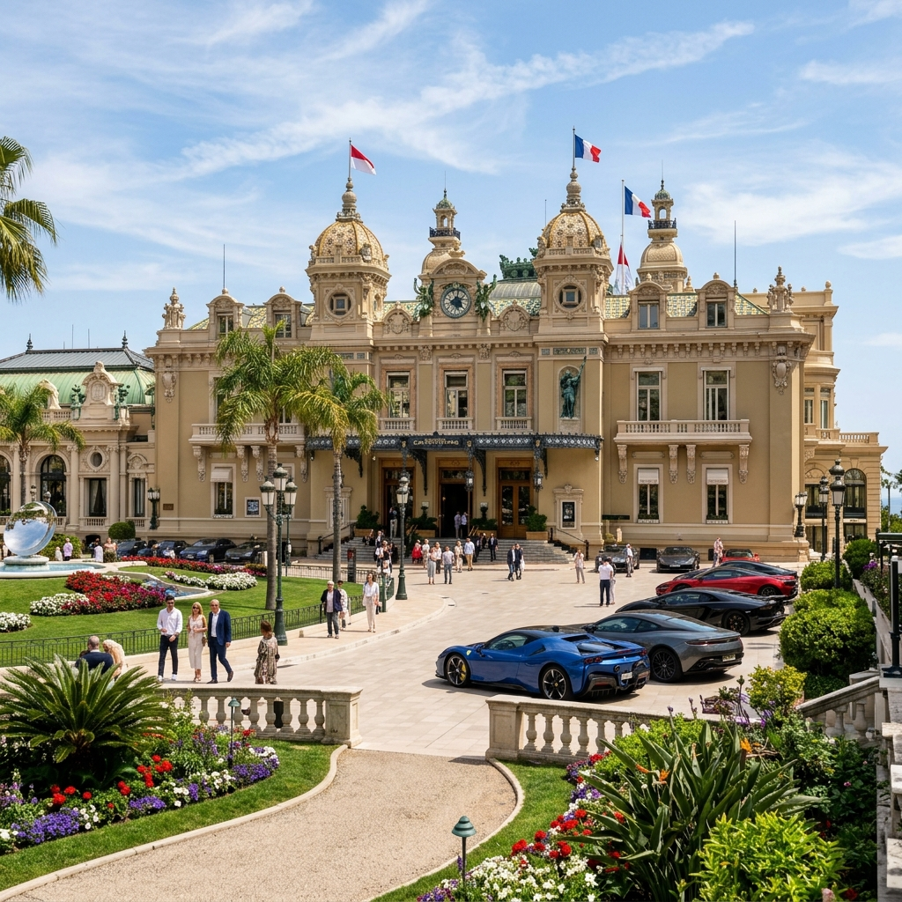

Italy
birth place of the Roman Empire, featuring rich masterpieces of art, architecture, lakes, mountains, and spectacular coastlines.

Rome
Italy's capital, a cosmopolitan city with nearly 3,000 years of globally influential history on display. Home to the Colosseum, Roman Forum, and Vatican City.

Florence
Tuscany's capital, home to Renaissance masterpieces by Michelangelo, Botticelli, and Leonardo. Features the Duomo and Ponte Vecchio bridge.

Venice
Built on more than 100 small islands in a lagoon. It has no roads, just waterways lined with Gothic and Renaissance palaces, and St. Mark's Square.

Amalfi Coast
A UNESCO-listed stunning stretch of coastline, featuring colorful hillside towns built precariously along vertical cliffs cascading down to the sea.

Capri Island
A rocky island jutting from an intensely blue sea. Famous for the Blue Grotto cave and Faraglioni rocks, long attracting tourists and elites.

Pompei
The remains of the ancient Roman city destroyed and preserved under Mt. Vesuvius' lava and ash from AD 79. Offers a walk through old streets and homes.

Assisi
A hill town in Umbria and birthplace of Saint Francis. The Basilica of St. Francis features 13th-century frescoes by Giotto detailing the saint's life.

San Giovanni Rotondo
Located in Apulia, famous as the home of Saint Padre Pio of Pietrelcina from 1916 until his death in 1968, drawing millions of pilgrims yearly.

Frasassi Caves
A remarkable karst cave system in Genga, Marche. Among the most famous show caves in Italy, boasting immense stalactites and caverns.

Pisa
Famed for the Leaning Tower on the Piazza dei Miracoli, a Romanesque cathedral, and baptistery showing detailed medieval stone carvings.

Padova
A city in the Veneto region, known for Giotto's Scrovegni Chapel frescoes and the vast 13th-century Basilica of St. Anthony containing the saint's tomb.

Verona
Famous setting of Shakespeare's "Romeo and Juliet". Features Juliet's House and balcony, along with a massive 1st-century Roman Arena hosting operas.
Rosa Mistica
A sacred pilgrimage site in Fontanelle, Italy, where the Madonna appeared in 1947 and blessed a holy spring for spiritual healing.

Milan
Italy's design capital, featuring the spectacular Gothic Duomo di Milano, the historic Galleria, and Leonardo da Vinci's mural "The Last Supper".
Cinque Terre
A beautiful coastal region with steep hills and sheer cliffs overlooking the sea. Made of five old-world fishing villages linked by walking paths.
Chianti Wine Region
Famous Tuscan countryside landscape lined with lush vineyards and olive groves, offering tastings of world-renowned Chianti wine labels.

Lake Como
A stunning Alpine-rimmed lake, lined by small picturesque resort towns, opulent historic villas, and elegant public botanical gardens.
Don Bosco Church (Turin)
The Basilica of Our Lady Help of Christians, founded by Saint John Bosco, enshrining his remains and 6,000 sacred relics of other saints.
Mont Blanc
Rising to 4,808 meters above sea level, Mont Blanc ("White Mountain") is the highest peak in the Alps and Western Europe, offering majestic glacier views.
Vatican City
A sovereign city-state enclaved within Rome, Italy, serving as the spiritual and administrative center of the Roman Catholic Church.

Vatican City
Home to the Pope and St. Peter's Basilica. Enshrines priceless art, Michelangelo's Sistine Chapel ceiling, and the massive St. Peter's Square.
Switzerland
Land of intense natural beauty, dominated by mountain peaks, rolling meadows, impressive lakes, and premium shopping centers.

Zurich
Switzerland's largest city, cultural hub, and financial capital. Features a well-preserved Old Town alongside the shores of Lake Zurich.
Lucerne
Lies at Lake Lucerne with a medieval core, historic buildings, and the iconic wooden Chapel Bridge. Ideal base for trips up Mt. Pilatus.
Interlaken
A traditional resort town nestled between Lake Thun and Lake Brienz, dominated by Bernese Alps. Renowned as Switzerland's adventure capital.
Zermatt & The Matterhorn
A car-free resort village enclosed by steep mountains, dominated by the graceful pyramid-shaped peak of the legendary Matterhorn.
Geneva
Set along the shores of Lake Geneva and surrounded by Alpine peaks. Host to international organizations, scenic lake cruises, and old town lanes.
Jungfraujoch
A notable saddle in the Bernese Alps, connecting Jungfrau and Mönch peaks at 3,466m. Reached by train, it is famously called the "Top of Europe".
Mt. Pilatus
A mountain overlooking Lucerne. Accessible by the world's steepest cogwheel railway, offering breathtaking Alpine panoramic views.
Mt. Titlis
Famous Alpine summit in Central Switzerland, featuring the world's first revolving cable car, glacier caves, and Europe's highest suspension bridge.
Lake Lucerne
A scenic 38-kilometer-long lake, best explored by historic paddle-wheel steamers linking Lucerne with Alpine trailheads.
Rhine Falls
The largest and most powerful plain waterfall in Europe. Located on the High Rhine, offering spectacular views from boat platforms.
St. Moritz
One of the world's most famous luxury winter sports resorts, set above a sunny lake with mineral-rich health springs.
Glacier Express
Switzerland's iconic rail journey connecting St. Moritz to Zermatt, traversing majestic mountain passes, 291 bridges, and 91 tunnels.
Golden Pass Line
A famous panoramic rail route connecting the historic heart of Switzerland (Lucerne) with the French-speaking shores of Montreux.
Lugano
Located in the Italian-speaking Ticino canton, Lugano features a gorgeous lake with palm trees, Alpine backdrops, and Mediterranean flair.
Lausanne
Built on three hills rising above Lake Geneva. A historic university town and world headquarters of the International Olympic Committee.
Bern
The capital of Switzerland, built on a loop of the Aare River, showcasing sandstone buildings and a charming UNESCO medieval old town.
France
One of the most visited destinations in the world. Graceful landmarks, Mediterranean coastlines, and rich culinary culture.
Paris
The City of Light. Romances visitors with the Eiffel Tower, Seine River, Notre-Dame, Champs-Elysées, cobblestone streets, and fine pastries.
Nice
Capital of the French Riviera, sitting on the pebbly shores of the Baie des Anges. Draws artists and vacationers to its Mediterranean sun.
Cannes
Famed for the international film festival, sandy beaches, luxury hotels, and the beautiful curving Boulevard de la Croisette coast.
Lourdes
A world-famous Catholic pilgrimage site in the Pyrenees foothills. Home to the Grotto of Massabielle where the Virgin Mary appeared in 1858.
Disneyland Paris
The most visited theme park resort in Europe, located 32 km east of Paris. A magical land featuring family rides and Disney castle dreams.
Lisieux
Capital of the beautiful Normandy Pays d'Auge area, famous worldwide as a major pilgrimage site dedicated to Saint Thérèse of Lisieux.
Cognac Region
The historic town and wine region in western France, world-famous for producing the prestigious double-distilled brandy named after it.
Bordeaux
A majestic port city on the Garonne River, renowned as the global wine capital, showcasing 18th-century mansions and Gothic cathedral art.
Lyons
France's gastronomic capital. Features 2,000 years of Roman history, medieval streets, and "traboules" (secret covered shortcuts).
Strasbourg
Capital of Alsace near the German border, seat of the European Parliament. Known for its astronomical clock and timber-framed houses.
Marseille
A vibrant Mediterranean port city founded by Greeks. Features the historic boat-lined Vieux-Port, fresh fish markets, and hilltop basilica views.
Saint Tropez
A legendary French Riviera town, once a simple fishing village and now a world-renowned glamorous seaside resort lined with mega-yachts.
Monaco
A glamorous sovereign city-state on the French Riviera, famous for its luxury yacht harbors, the Prince's Palace, and world-class casinos.

Monte Carlo
Monaco's most famous district, renowned for its iconic Casino de Monte-Carlo, Belle Époque architecture, luxury sports cars, and Mediterranean views.
Germany
Historic landmarks, dense forests, fairy-tale castles, vibrant cultural hubs, and scenic river valleys.
Berlin
Germany's capital. Home to the Brandenburg Gate, remains of the Berlin Wall, and a thriving art and modern landmark scene.
Munich
Bavaria's capital, famous for beer halls, annual Oktoberfest, and the Neo-Gothic town hall on Marienplatz square.
Black Forest
A upland region in southwest Germany. Defined by dark, densely wooded hills, cuckoo clocks, thermal spas, and the Triberg waterfalls.
Cologne
A 2,000-year-old city spanning the Rhine, famous for the twin-spired High Gothic Cologne Cathedral, Picasso art, and Roman ruins.
Austria
Imperial heritage, baroque architecture, alpine valleys, classical music legacy, and spectacular lakes.
Vienna
Austria's elegant capital. Defined by its musical legacy (Mozart, Beethoven) and the grand imperial Schönbrunn Palace.
Salzburg
Divided by the Salzach River, the birthplace of Mozart. Features the Hohensalzburg Fortress and Mirabell Palace gardens.

Eagle's Nest (Kehlsteinhaus)
A historic Third Reich mountaintop retreat above Berchtesgaden, offering panoramic Alpine views, now open as a seasonal restaurant.
Innsbruck
Capital of Austria's Tyrol state, nestled in the Alps. A winter sports hub known for imperial architecture and futuristic funiculars.
Graz
The capital of Austria's Styria province, blending Renaissance and Baroque streets with a futuristic contemporary art museum (Kunsthaus).
Netherlands & Belgium
Scenic canals, world-renowned spring flower parks, modern architectural marvels, and historic guildhalls.
Amsterdam
A city of historic canals, narrow houses with gabled facades, and museums like the Van Gogh, Rijksmuseum, and Anne Frank House.
Keukenhof: Garden of Europe
The largest public flower garden in Lisse, featuring over 70 acres filled with millions of blooming tulips, hyacinths, and daffodils in spring.
Brussels
The capital of Belgium and administrative center of the EU. Features medieval guildhalls on the Grand Place and Art Nouveau architecture.
Rotterdam
A major Dutch port city, reconstructed after WWII and now famous for its bold, futuristic architecture and rich maritime heritage.
Madurodam
A miniature park in The Hague, containing detailed 1:25 scale replica models of famous Dutch landmarks, historic cities, and infrastructure.
Spain & Portugal
Sun-drenched coasts, historical palaces, Moorish design elements, and religious landmarks.
Barcelona
Barcelona, the cosmopolitan capital of Spain’s Catalonia region, is known for its art and architecture. The fantastical Sagrada Família church and other modernist landmarks designed by Antoni Gaudí dot the city. Museu Picasso and Fundació Joan Miró feature modern art by their namesakes. City history museum MUHBA, includes several Roman archaeological sites.
Madrid
Madrid, Spain’s central capital, is a city of elegant boulevards and expansive, manicured parks such as the Buen Retiro. It’s renowned for its rich repositories of European art, including the Prado Museum’s works by Goya, Velázquez and other Spanish masters. The heart of old Hapsburg Madrid is the portico-lined Plaza Mayor, and nearby is the baroque Royal Palace and Armory, displaying historic weaponry.
Lisbon
Lisbon is Portugal’s hilly, coastal capital city. From imposing São Jorge Castle, the view encompasses the old city’s pastel-colored buildings, Tagus Estuary and Ponte 25 de Abril suspension bridge. Nearby, the National Azulejo Museum displays 5 centuries of decorative ceramic tiles. Just outside Lisbon is a string of Atlantic beaches, from Cascais to Estoril.
Fatima
Home to the Sanctuary of Fátima, a Catholic pilgrimage site. The Capelinha das Aparições marks the spot where the Virgin Mary allegedly appeared in 1917. Other sacred sites include the Basílica de Nossa Senhora do Rosário, with its golden angels, and the modern church of Igreja da Santíssima Trindade.
Seville
Seville is the capital of southern Spain’s Andalusia region. It’s famous for flamenco dancing, particularly in its Triana neighborhood. Major landmarks include the ornate Alcázar castle complex, built during the Moorish Almohad dynasty, and the 18th-century Plaza de Toros de la Maestranza bullring. The Gothic Seville Cathedral is the site of Christopher Columbus’s tomb and a minaret turned bell tower, the Giralda.
Valencia
The port city of Valencia lies on Spain’s southeastern coast, where the Turia River meets the Mediterranean Sea. It’s known for its City of Arts and Sciences, with futuristic structures including a planetarium, an oceanarium and an interactive museum.
Croatia & Others
Historic walled cities on the Adriatic, Central European capitals, and scenic karst caves.
Dubrovnik
The "Pearl of the Adriatic". Encircled with massive 16th-century stone walls, it features a limestone-paved pedestrian core and historic palaces.
Split
A coastal town in Croatia, built around the fortress-like complex of the 4th-century Diocletian's Palace erected by the Roman emperor.
Prague
Capital of the Czech Republic, nicknamed "City of a Thousand Spires" with preserved historic center, Gothic Charles Bridge, and Prague Castle.
Budapest
Hungary's capital, bisected by the Danube River. Connects flat Pest with hilly Buda containing Castle Hill and the Fisherman's Bastion.
Ljubljana
Slovenia's capital, known for university population, green spaces, outdoor cafés along the river, and the unique Triple Bridge structure.
Krk Island
A large Croatian island connected by a bridge. Known for its 5th-century cathedral, Frankopan Castle, and the historic Kosljun monastery.
Bratislava
The capital of Slovakia, set along the Danube. Features a pedestrian-only 18th-century old town, lively cafés, and the hilltop Bratislava Castle.
Postojna Cave
A world-famous 24-kilometer karst cave system in Slovenia, sculpted by the Pivka River, containing spectacular stalagmite formations.
India
A land of vibrant cultures, breathtaking historical landmarks, tropical beaches, and serene mountain valleys.

Delhi
India's capital, rich in history, featuring iconic monuments like the Red Fort and Qutub Minar.

Agra
Home of the iconic Taj Mahal, Agra Fort, and rich Mughal history.

Jaipur
The Pink City, known for majestic palaces, historic forts, and rich heritage.

Kerala Backwaters
Peaceful palm-lined canals, serene green landscapes, and relaxing houseboat cruises.

Goa
Vibrant sandy beaches, historic Portuguese churches, and delicious local seafood.
Dubai
A glittering oasis of futuristic skyscrapers, luxury shopping malls, and adventurous desert safaris.

Downtown Dubai
Home of the iconic Burj Khalifa, the massive Dubai Mall, and spectacular fountain shows.

Palm Jumeirah
Artificial luxury archipelago housing world-famous resorts, beaches, and Atlantis.

Desert Safari
Thrilling dune bashing, camel riding, and traditional Bedouin camp dining experiences.
Sri Lanka
An island nation of ancient ruins, scenic tea plantations, lush rainforests, and diverse wildlife.

Sigiriya Rock
Stunning ancient rock fortress and sky palace ruins standing tall in the forest.

Kandy & Tea Hills
Scenic mountain cities featuring sacred temples, lush tea gardens, and misty hills.

Galle Fort
Historic Dutch colonial fort city, featuring cozy cobblestone streets and a scenic lighthouse.
Thailand
The Land of Smiles, combining bustling city markets, historic temples, and world-famous tropical beaches.

Bangkok
Vibrant capital city known for ornate shrines, lively street life, and shopping hubs.

Phuket & Islands
Gateway to the breathtaking Phi Phi Islands, crystal clear waters, and beach resorts.

Chiang Mai
Charming mountainous city in northern Thailand, rich in ancient temples and nature parks.
Malaysia
A multicultural hub offering a unique mix of futuristic cities, historic colonial towns, and pristine islands.

Kuala Lumpur
Home to the towering Petronas Twin Towers, bustling street food stalls, and malls.

Langkawi Island
An archipelago of 99 tropical islands, famous for duty-free shopping, cable car, and beaches.
Singapore
A highly clean, advanced city-state renowned for its garden architectures, theme parks, and rich shopping hubs.

Marina Bay
Features Gardens by the Bay, Supertree structures, Marina Bay Sands, and the iconic Merlion.

Sentosa Island
A fun resort island offering theme park entertainment, sandy beaches, and golf courses.
Indonesia
A volcanic archipelago home to diverse wildlife, ancient temples, beaches, and tropical rainforests.

Bali (Ubud & Seminyak)
The Island of the Gods, famous for cultural Ubud, rice fields, temples, and sandy sunsets.

Nusa Penida
Scenic island adjacent to Bali, famous for the iconic T-Rex shaped Kelingking Beach cliff.
Maldives
A dreamy escape of overwater luxury villas, sapphire waters, and teeming coral reefs.

Luxury Atolls
Relaxing private overwater bungalows, white sandbanks, and beautiful house reef snorkelling.